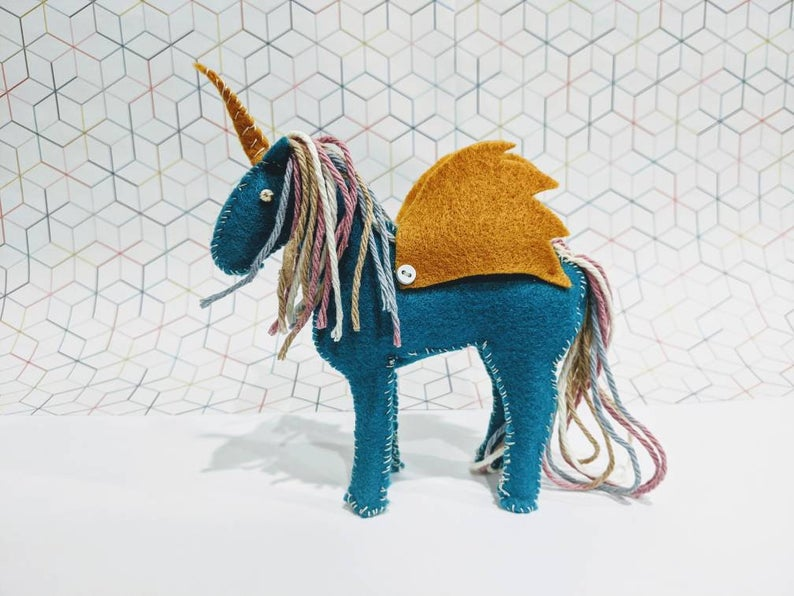
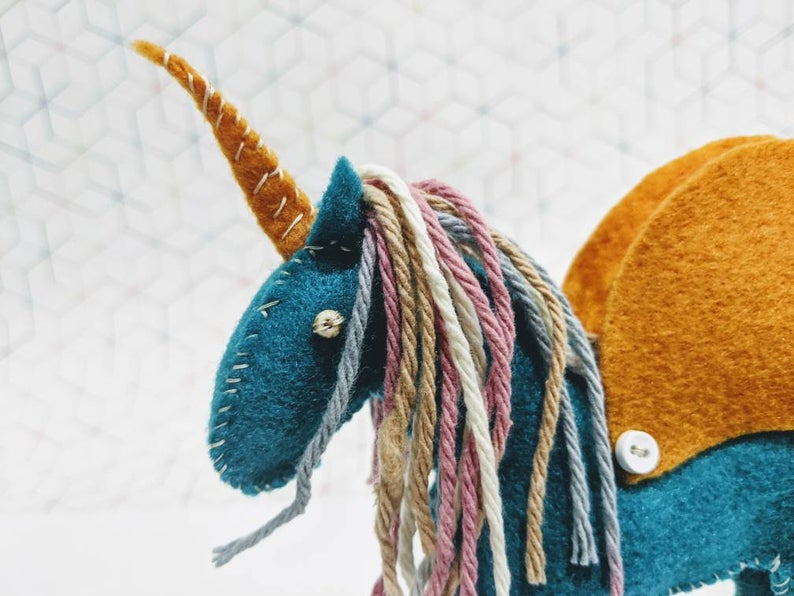
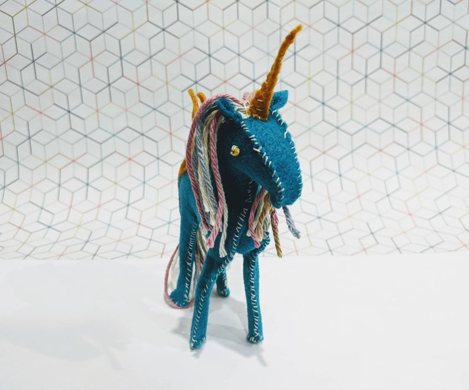
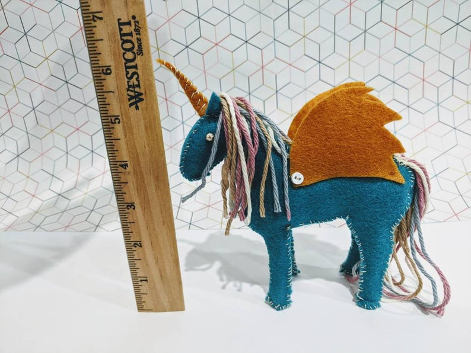
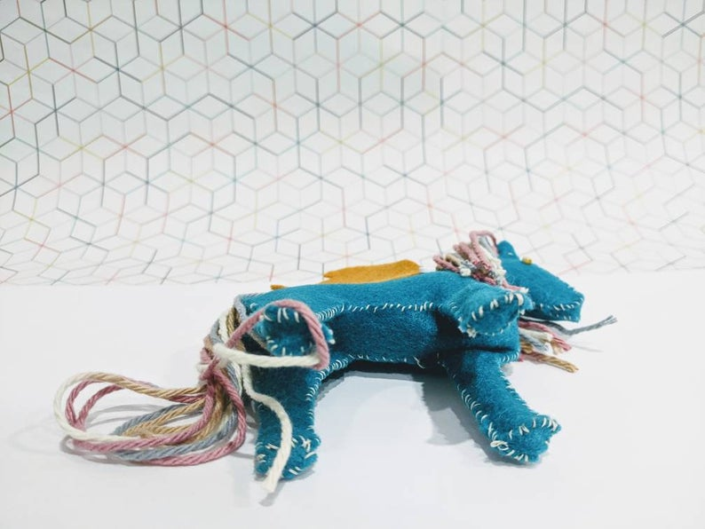
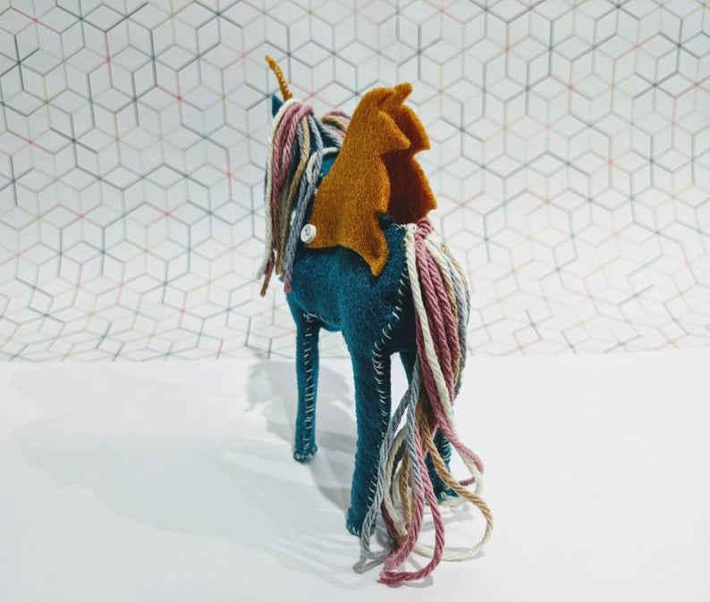

Hey! Ice Cream
Winged Unicorn
Materials: felt, beads, yarn, thread

This piece started out as teal felt and brown wings. Once I had the wings cut out, my fiance mentioned that they looked like Hey Arnold's hair (Nickelodeon cartoon character). Once I had him put together, I dug through my yarn to find something that I thought matched, and came up with the mutli-colored yarn. All put together, the color scheme reminds me of ice cream. Specifically, Blue Moon with sprinkles, caramel, and brown sugar. Thus the name!






